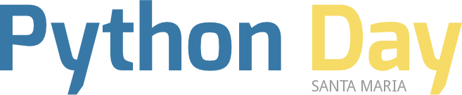

Um dia inteiro de palestras sobre a linguagem de programação que mais cresce no mundo
Sábado, 03 de maio de 2014 • 8h00 às 17h • UNIFRA
Faça sua inscriçãoSábado, 03 de maio de 2014 • 8h00 às 17h • UNIFRA
Faça sua inscriçãoMinicurrículo
Minicurrículo
Minicurrículo
Minicurrículo
Minicurrículo
Minicurrículo
Minicurrículo
| 08:00 | Recepção e credenciamento | |
| 08:30 |
Python sob a ótica de um estudante de Design
O que torna Python uma linguagem com bom Design a nível do programador.
|
Daniel Carli |
| 09:00 |
Site da UFSM - O mundo a 700 requisições por segundo
Essa palestra tem o objetivo de falar sobre o processo de produção e desenvolvimento do novo site da UFSM e de como a linguagem de programação Python e o framework para web Django, em conjunto com outras tecnologias livre, tornaram isso possível.
|
Henrique Pereira |
| 10:00 |
Python e Arduino
Essa palestra irá apresentar os conceitos básicos sobre o projeto Arduino e sua integração com a linguagem Python. Gostaria de ter a disposição um projeto e link de internet (se possivel sem proxy).
|
Leandro Nunes |
| 11:00 |
Welcome to the Django
Palestra com finalidade de apresentar o Django como proposta para desenvolvimento de aplicações web. Apresentar os principais recursos do framework e como configurar um ambiente saudável de programação.
|
Henrique Leal |
| 12:00 | Intervalo do Almoço | |
| 13:00 |
PyRobotics: A cobra robótica!
A muito a humanidade sonha em construir robôs autômonos cada vez mais complexos capazes de exercer atividades cada vez mais impressionantes para facilitar a nossa vida, mas somente um verdadeiro jedi é capaz de construir seu C3PO inteiramente funcional e fluente em mais de 6 milhões de meios de comunicação!
Nessa conversa aberta pretendo comprimir todo conhecimento adquirido nessa minha jornada no mundo da robótica e, com muitos exemplos em python, demonstrar como a cobra azul e amarela está me ajudando a domesticar as espécies de robôs terrestres, humanoides e aéreos, facilitando muito minha trilha em busca da força nesse complexo mundo dos robôs autônomos! |
Guilherme Franco |
| 14:00 |
Mantendo seu Tempo a salvo com Python e Git
A linguagem de programação Python está entre as 10 mais utilizadas no desenvolvimento de software. Multiplataforma, de fácil aprendizagem e alta produtividade, Python torna-se cada dia mais popular.
A sintaxe simples e limpa torna Python fácil de compreender e trabalhar, sendo ideal para ciclos de desenvolvimento rápido exigidos nos dias atuais. Muitas estimativas sugerem que é 5 a 10 vezes mais rápido desenvolver uma aplicação em Python do que em Java, e a diferença é ainda maior quando comparado com C e C++.
Git é um Sistema de Controle de Versão (SCM) distribuído voltado à atender todo tipo de necessidade, desde pequenos a grandes projetos, de forma rápida e eficiente. Ao utilizar Git um histórico de modificações é mantido, o trabalho é organizado e, consequentemente, a velocidade de desenvolvimento é incrementada.
Individualmente Python e Git são excelentes ferramentas de trabalho, porém, quando utilizadas em conjunto, maximizam a produtividade, reduzindo o tempo necessário para o desenvolvimento de software.
O objetivo da palestra é apresentar Python e Git discutindo sua utilização combinada. Além disso, a palestra pretende incentivar a participação em projetos open source, uma ótima oportunidade para aprimorar habilidades, conhecer novas pessoas, perceber novas oportunidades e ampliar horizontes.
|
Matheus Pereira |
| 15:00 |
Porque Python é legal :D
Apresentação do mundo alternativo e legal do Python, um pouco de sua história e filosofia de vida ( The Zen of Python ), exemplos de trechos de código e provando porque o Python é Legal.
|
Joelmir Ribacki |
| 16:00 |
Coding Dojo
Coding Dojo
|
Henrique Pereira |
| 16:30 | Encerramento e Sorteio |
A participação no evento é gratuita e as vagas são limitadas!
Rua Silva Jardim, 1175, Cep: 97010-491, 7º andar do Prédio 16, Conjunto III